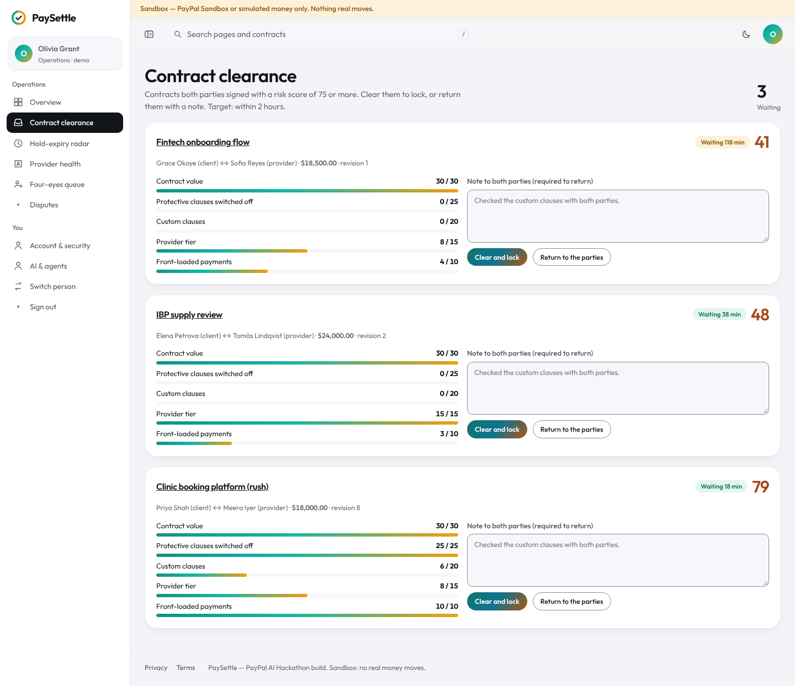
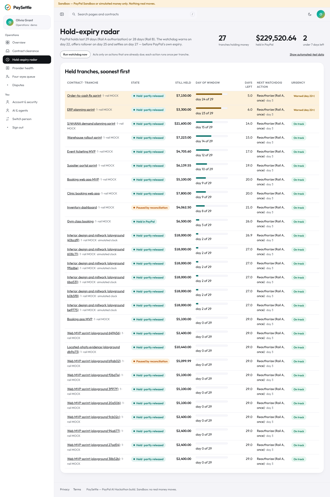
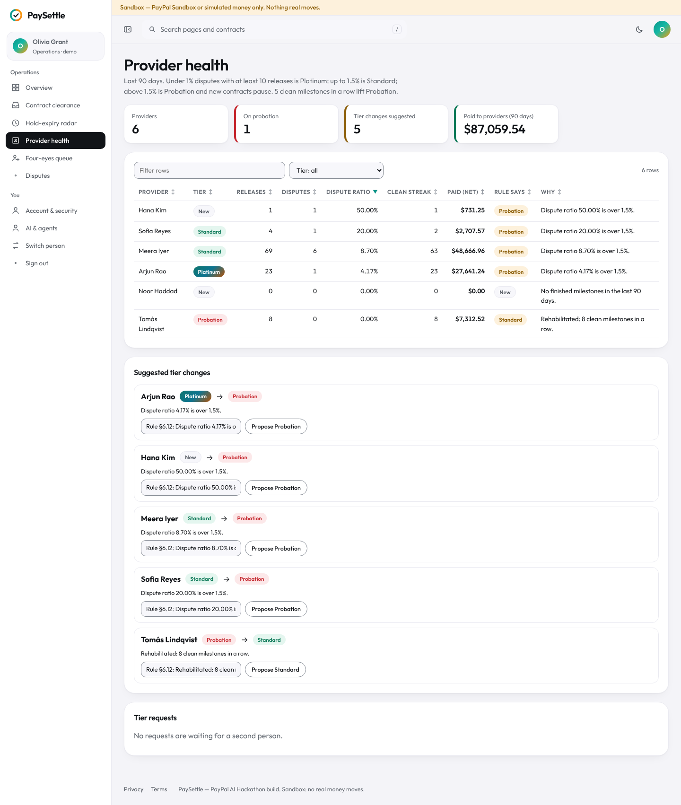
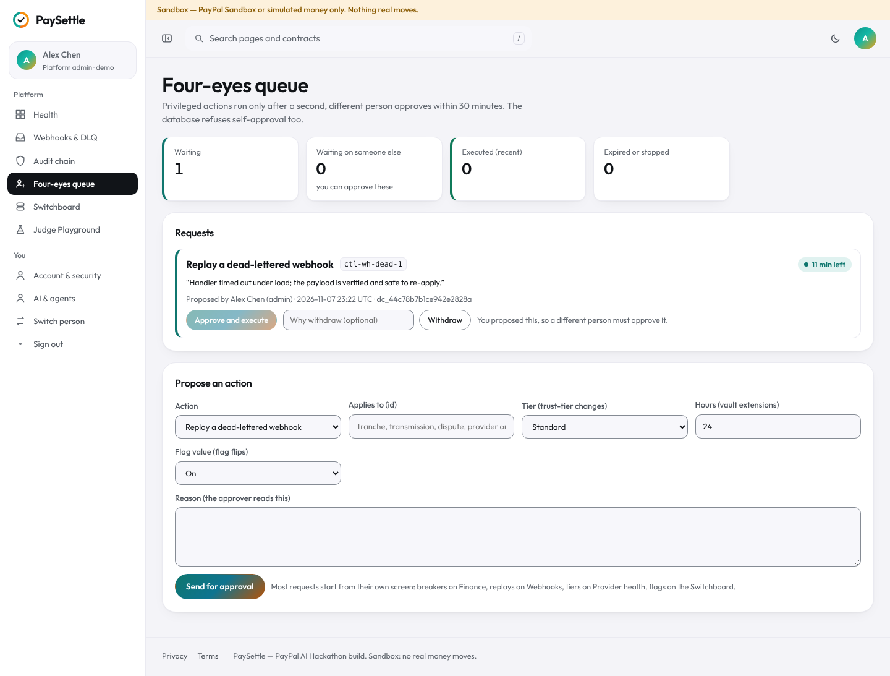

What this role does
Operations (demo: Olivia Grant) clears contracts with a high risk score, watches holds close to PayPal's window, handles escalated milestone reviews, and approves four-eyes requests proposed by someone else.
Signing in
Open the demo, choose Try the live demo (or go to /login) and pick Olivia Grant under “Explore the live demo”. No password is needed in the sandbox. You land on /ops.
Step by step
1. Start from the overview
What needs a person today.
- Open Overview. The tiles count contracts waiting for clearance, holds near the window end, escalated reviews, disputes near deadline and four-eyes requests for you.
- Each table links to its full queue.

2. Clear or return a contract
Contracts both parties signed with a risk score of 75 or more wait here. Target: within 2 hours.
- Open Contract clearance.
- Read the parts of the score: contract value, protective clauses switched off, custom clauses, provider trust tier and front-loaded payments.
- Press Clear and lock to lock the contract into tranches, or write a note and press Return to the parties. Returning voids both signatures.

3. Watch the hold-expiry radar
A PayPal hold has a limited window. The watchdog warns at day 22 and offers a rollover at day 25.
- Open Hold-expiry radar.
- Check holds with few hours left; contact the parties if approvals or a rollover are needed.

4. Check provider health
Trust tiers follow the last 90 days of disputes: under 1% with at least 10 releases is Platinum, up to 1.5% is Standard, above 1.5% is Probation (new contracts pause).
- Open Provider health; filter by tier.
- Review the providers with a suggested tier change and the ones on probation.

5. Act on the four-eyes queue
Sensitive actions (for example replaying a dead-lettered webhook or flipping a platform switch) need a second person.
- Open Four-eyes queue.
- Read the reason, then Approve and execute or Veto with an optional reason. You cannot approve your own request; requests expire after 30 minutes.

What the money states mean
PaySettle never keeps the client's money in its own account. Each tranche (a block of milestones that fits inside one PayPal hold window) is an authorization on the client's PayPal account; each approved milestone is a partial capture from it.
| You see | Where the money is |
|---|---|
| Planned — not funded | Nowhere yet. The contract is signed and locked; the client has not approved the PayPal hold. |
| Waiting for PayPal approval | The order exists in PayPal; the client still has to approve it there. Nothing is reserved until they do. |
| Held in PayPal | Reserved on the client's PayPal account (an authorization). Not paid to anyone yet. |
| Partly released | Some milestones were approved and captured to the provider; the rest is still held. |
| Released | That milestone's amount was captured to the provider's PayPal account, minus the platform fee (2.5% per release in the demo). |
| Frozen: in dispute | Only the disputed milestone's amount is frozen; it stays held in PayPal while the dispute runs. Other milestones carry on. |
| Returned to client | Released back to the client: the unused part of the hold is voided, or a captured amount is refunded after a verdict. |
| Rolled over | The hold window was closing, so the unfinished remainder moved into a new tranche that the client funds again. |
| Settling / Closed | The hold window is ending: approved work is paid and unstarted milestones go back to the client. Closed means nothing is left on that tranche. |
| Paused for checks | Reconciliation found a difference between the contract, the ledger and PayPal. Releases on that tranche wait until Finance resolves it. |
Limits of this demo
- Sandbox only. Money is either PayPal Sandbox money or simulated by the mock rail (“Simulated PayPal (mock)”). Nothing real moves, and the yellow banner at the top of every app page says so.
- The mock rail keeps its records in memory. After a server restart, Finance's reconciliation may show older tranches as “no PayPal data”; the ledger is still checked against the contract.
- AI is advisory. The AI verifier, the mediation proposal and the drafting help only suggest. People approve, sign and decide; the rule-based checks run with or without AI. Without an AI key the panels say “AI unavailable”.
- Time can be simulated. The Judge Playground moves a session's virtual clock only; deadlines you see on seeded data use each contract's own clock.
- Demo people are shared. Everyone using the demo signs in as the same personas, and Playground scenarios add contracts to them, so lists grow over time.
- PaySettle is a hackathon build, not a licensed payment, escrow or legal service. Contract text and dispute outcomes are not legal advice.